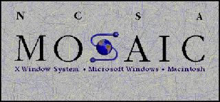
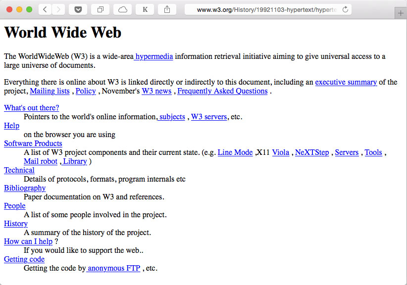
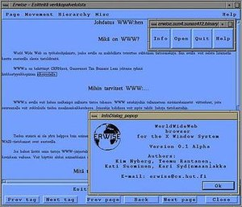
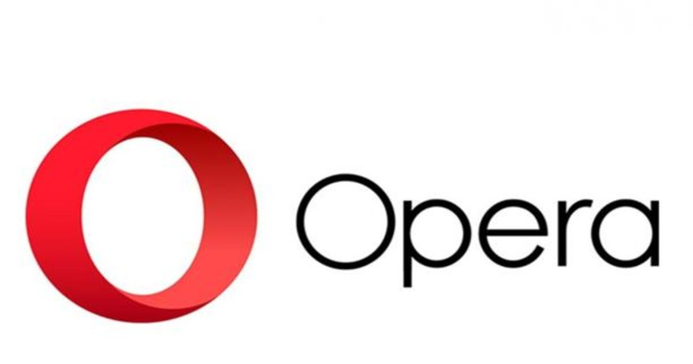

1990. Primer navegador
Implementado en NEXT.

1991. Primer servidor
http://info.cern.ch/hypertext/WWW/TheProject.html

1993. Nuevos navegadores
Erwise.
ViolaWWW.
NCSA Mosaic, X-Windows.

1994. Más navegadores
Netscape (nuevo nombre de Mosaic Com.).
Opera (proyecto de investigación de Telenor).

1995. Más dinamismo: Java
Sun ofrece la versión Java 1.0.
Diseñado para sistemas empotrados desde 1991.
Algunos navegadores incorporan la máquina virtual de Java: Applets.
Con el tiempo, Java se utiliza más en el lado servidor: Servlets, JSP, J2EE, etc.

1996. Guerra de navegadores
Microsoft vs. Netscape.
1997. Aparece Google…
Larry Page y Sergei Brin fundan Google.